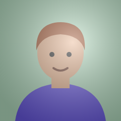

SA
sam
Morning! The proofs for the autumn issue are in the shared folder.
EL
eleni
Καλημέρα! Τα είδα, θα τα κοιτάξω μέχρι το μεσημέρι.

maria
Can we move Friday’s lunch to 2pm? Vote here. Code: npm run build
jo
Ναι, στις 2 είναι μια χαρά για μένα. Ευχαριστώ!